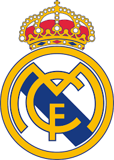

| الـبــيـــانــات الــشــخــصــيــة | |
| الاسم الكامل | كريستيانو رونالدو دوس سانتوس أفيرو |
| تاريخ الميلاد | 5 فبراير 1985 |
| محل الميلاد | فونشال-ماديرا-البرتغال |
| العمر | 36 سنة |
| الطول | 1.87 متر |
| الجنسية | البرتغال |
| محل الاقامة | تورينو- ايطاليا |
| مركز اللعب | مهاجم - رأس حربة |
كريستيانو رونالدو دوس سانتوس أفيرو (تلفظ برتغالي: /kɾiʃˈtjɐnu ʁoˈnaɫdu/؛ مواليد 5 فبراير 1985) المعروف بـ كريستيانو رونالدو. هو لاعب كرة قدم برتغالي يلعب في مركز الهجوم مع نادي يوفنتوس في الدوري الإيطالي ومنتخب البرتغال لكرة القدم. غالبًا ما يُعتبر أفضل لاعب في العالم ويعتبره الكثيرون من أعظم اللاعبين في تاريخ كرة القدم، حصل رونالدو على خمسة كرات ذهبية كأكثر لاعب أوروبي،[note 3] وهو أول لاعب يفوز بأربعة أحذية ذهبية أوروبية. وقد فاز بـ 32 بطولة رسمية في مسيرته، من ضمنها سبعة ألقاب دوري، وخمسة ألقاب في دوري أبطال أوروبا ولقب واحد في بطولة أمم أوروبا ولقب البطولة الافتتاحية لدوري الأمم الأوروبية. يحمل رونالدو الرقم القياسي لأكبر عدد من الأهداف (130) والصناعة (41) في تاريخ دوري أبطال أوروبا. وهو أحد اللاعبين القلائل الذين شاركوا في أكثر من 1000 مباراة رسمية في مسيرتهم وسجل أكثر من 700 هدف رسمي مع الأندية والمنتخب. ولد ونشأ في جزيرة ماديرا البرتغالية، وبدأ مسيرته في نادي سبورتينغ لشبونة قبل أن يوقع مع مانشستر يونايتد بسن الثامنة عشر عامًا في عام 2003. بعد فوزه ببطولته الأولى، كأس الاتحاد الإنجليزي، خلال موسمه الأول في إنجلترا، ساعد اليونايتد على الفوز بثلاثة ألقاب متتالية في الدوري الإنجليزي الممتاز وبطولة واحدة في دوري أبطال أوروبا وبطولة واحدة في كأس العالم للأندية. وفي سن 23 حصل على جائزة الكرة الذهبية وجائزة أفضل لاعب كرة قدم في العالم من الفيفا. في عام 2009، أصبح رونالدو أغلى لاعب في تاريخ كرة القدم[note 4] عندما انتقل من مانشستر يونايتد إلى ريال مدريد في صفقة انتقال بلغت قيمتها 80 مليونجنيه إسترليني (94 مليون يورو/131.6 مليون دولار أمريكي). هناك، فاز رونالدو بـ 15 لقبًا، من ضمنها لقبا دوري ولقبا كأس وأربعة ألقاب دوري أبطال أوروبا، وأصبح الهداف التاريخي للنادي. بعد انضمامه إلى مدريد، أنهى رونالدو في المركز الثاني في جائزة الكرة الذهبية ثلاث مرات، خلف ليونيل ميسي– منافسه الوظيفي المحسوس – قبل أن يفوز متتاليين بالكرة الذهبية من 2013 و2014 ومرة أخرى من 2016 و2017. بعد فوزه بلقب دوري أبطال أوروبا للمرة الثالثة على التوالي في عام 2018، أصبح رونالدو أول لاعب يفوز باللقب خمس مرات في النسخة الحديثة.[20] في عام 2018، وقع مع يوفنتوس في صفقة انتقال بقيمة 100 مليون يورو (88 مليون جنيه إسترليني)، كأعلى مبلغ انتقال يُدفع للاعب تجاوز سن الثلاثين، وهو أعلى مبلغ يدفعه أي نادي إيطالي عبر التاريخ. فاز بالدوري الإيطالي في أول موسمين له مع النادي. تم اختيار رونالدو كأفضل لاعب برتغالي في التاريخ من قبل الاتحاد البرتغالي لكرة القدم في عام 2015. شارك لأول مرة في عام 2003 في سن 18، ومنذ ذلك الحين خاض أكثر من 160 مباراة دولية، بما في ذلك مشاركته وتسجيله في عشر بطولات كبرى، أصبح اللاعب الأكثر مشاركة في البرتغال والهداف التاريخي لمنتخب بلاده. سجل هدفه الدولي الأول في بطولة أمم أوروبا 2004 وساعد البرتغال في الوصول إلى نهائي البطولة. تولى قيادة منتخبه في يوليو 2008، مما أدى إلى فوز البرتغال لأول مرة على الإطلاق في بطولة كبرى بفوزهم ببطولة بطولة أمم أوروبا 2016، وحصل على الحذاء الفضي كثاني أعلى هداف في البطولة. يُعد رونالدو واحدًا من أكثر الرياضيين شهرة وقابلية للتسويق في العالم، وقد حصل على لقب أفضل رياضي في العالم من قبل فوربس في عامي 2016 و2017، بالإضافة إلى أشهر رياضي في العالم من قبل إي إس بي إن في أعوام 2016 إلى 2019. أدرجته مجلة تايم في قائمة أكثر 100 شخصية مؤثرة في العالم لعام 2014. رونالدو هو أول لاعب كرة قدم، وكذلك ثالث رياضي، يكسب مليار دولار في وهو لا يزال يمارس مهنته.